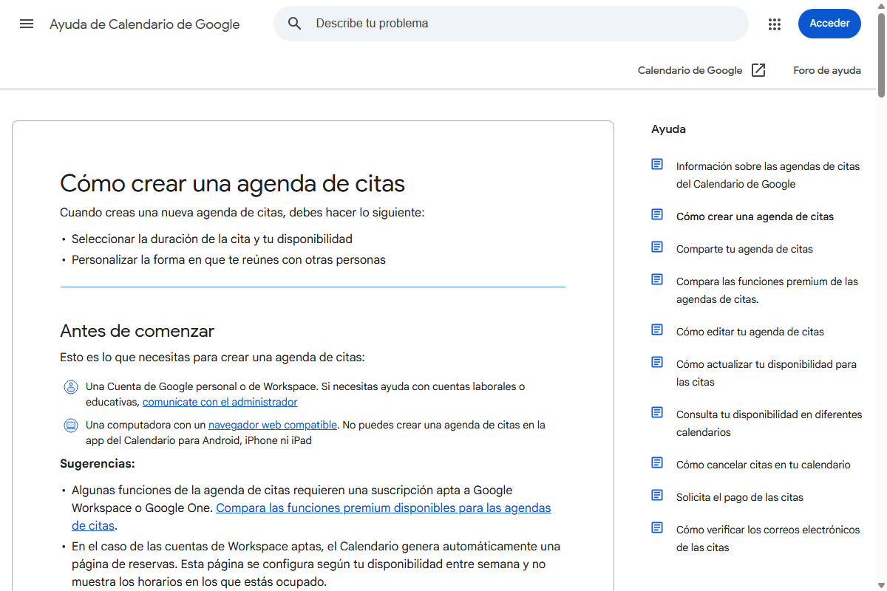

Integración de agenda para llamadas de demostración y detección automática de citas
aisalesradar.agency@gmail.com) dirigiéndote a:
10-Min Website Walkthrough & Strategy Call.
http://localhost:8765.https://calendar.app.google/cuMM1b8eHSnjNzMP6).| Campo en el Panel | Dónde obtenerlo en Google | Valor de Ejemplo / Formato |
|---|---|---|
| booking_url Enlace de Agenda / Videollamada |
Google Calendar ➔ Clic en cita ➔ Botón «Compartir» ➔ Copiar enlace | https://calendar.app.google/cuMM1b8eHSnjNzMP6Debe iniciar con https://calendar.app.google/ |
sincronizar_mensajes.py escaneará tu buzón en busca de correos con el asunto «Se ha reservado una cita» o «Invitation: 10-Min Walkthrough...» y vinculará la cita directamente con el prospecto en tu Kanban.